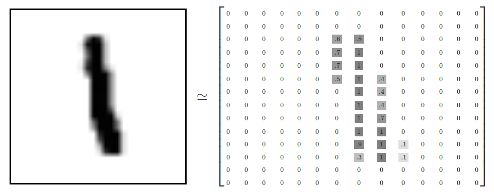
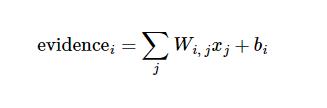
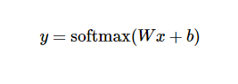

MNIST机器学习入门
开始学习编程的时候，第一件事往往是学习打印"Hello World"。就好比编程入门有Hello World，机器学习入门有MNIST
MNIST是一个入门级的计算机视觉数据集，它包含各种手写数字图片：

它也包含每一张图片对应的标签，告诉我们这个是数字几。比如，上面这四张图片的标签分别是5，0，4，1
在此教程中将训练一个机器学习模型用于预测图片里面的数字。目的不是要设计一个世界一流的复杂模型 （尽管会在之后给你源代码去实现一流的预测模型） 而是要介绍下如何使用TensorFlow。所以，这里会从一个很简单的数学模型开始，它叫做 Softmax Regression
对应这个教程的实现代码很短，而且真正有意思的内容只包含在三行代码里面。但是，去理解包含在这些代码里面的设计思想是非常重要的：TensorFlow工作流程和机器学习的基本概念。因此，这个教程会很详细地介绍这些代码的实现原理
MNIST数据集
MNIST数据集的官网是Yann LeCun's website。在这里，提供了一份python源代码用于自动下载和安装这个数据集。可以下载这份代码，然后用下面的代码导入到你的项目里面，也可以直接复制粘贴到你的代码文件里面：
import tensorflow.examples.tutorials.mnist.input_data as input_data mnist = input_data.read_data_sets("MNIST_data/", one_hot=True)
下载下来的数据集被分成两部分：
- mnist.train: 60000行的训练数据集
- mnist.test: 10000行的测试数据集
这样的切分很重要，在机器学习模型设计时必须有一个单独的测试数据集不用于训练而是用来评估这个模型的性能，从而更加容易把设计的模型推广到其他数据集上（泛化）
每一个MNIST数据单元有两部分组成：
- 一张包含手写数字的图片
- 一个对应的标签
我们把这些图片设为 xs 把这些标签设为 ys 。训练数据集和测试数据集都包含xs和ys，比如训练数据集的图片是 mnist.train.images 训练数据集的标签是 mnist.train.labels
每一张图片包含28X28个像素点。可以用一个数字数组来表示这张图片：

把这个数组展开成一个向量，长度是 28x28 = 784。如何展开这个数组（数字间的顺序）不重要，只要保持各个图片采用相同的方式展开。从这个角度来看，MNIST数据集的图片就是在784维向量空间里面的点, 并且拥有比较复杂的结构
提醒: 此类数据的可视化是计算密集型的
展平图片的数字数组会丢失图片的二维结构信息。这显然是不理想的，最优秀的计算机视觉方法会挖掘并利用这些结构信息，但是在这个教程中可以忽略这些结构，所介绍的简单数学模型，softmax回归，不会利用这些结构信息
因此，在MNIST训练数据集中，mnist.train.images 是一个形状为 [60000, 784] 的张量，第一个维度数字用来索引图片，第二个维度数字用来索引每张图片中的像素点。在此张量里的每一个元素，都表示某张图片里的某个像素的强度值，值介于0和1之间

相对应的MNIST数据集的标签是介于0到9的数字，用来描述给定图片里表示的数字。为了用于这个教程，使标签数据是 one-hot vectors
一个one-hot向量除了某一位的数字是1以外其余各维度数字都是0
在此教程中，数字n将表示成一个只有在第n维度（从0开始）数字为1的10维向量。比如，标签0将表示成([1,0,0,0,0,0,0,0,0,0,0])。因此， mnist.train.labels 是一个 [60000, 10] 的数字矩阵

现在，准备好可以开始构建我们的模型啦！
Softmax回归介绍
MNIST的每一张图片都表示一个数字，从0到9。我们希望得到给定图片代表每个数字的概率。比如说，模型可能推测一张包含9的图片代表数字9的概率是80%但是判断它是8的概率是5%（因为8和9都有上半部分的小圆），然后给予它代表其他数字的概率更小的值
这是一个使用 softmax回归 模型的经典案例。softmax模型可以用来给不同的对象分配概率。即使在之后，训练更加精细的模型时，最后一步也需要用softmax来分配概率
softmax回归： 为了得到一张给定图片属于某个特定数字类的证据，对图片像素值进行 加权求和 ：
- 如果这个像素具有很强的证据说明这张图片不属于该类，那么相应的权值为负数
- 如果这个像素拥有有利的证据支持这张图片属于这个类，那么权值是正数
下面的图片显示了一个模型学习到的图片上每个像素对于特定数字类的权值。红色代表负数权值，蓝色代表正数权值：
我们也需要加入一个额外的偏置量，因为输入往往会带有一些无关的干扰量。因此对于给定的输入图片 x 它代表的是数字 i 的证据可以表示为：

其中 W_i 代表权重， b_i 代表数字 i 类的偏置量， j 代表给定图片 x 的像素索引用于像素求和。然后用softmax函数可以把这些证据转换成概率 y ：

这里的softmax可以看成是一个激励函数或者链接函数，把定义的线性函数的输出转换成想要的格式，也就是关于10个数字类的概率分布。因此，给定一张图片，它对于每一个数字的吻合度可以被softmax函数转换成为一个概率值。softmax函数可以定义为：

展开等式右边的子式，可以得到：

但是更多的时候把softmax模型函数定义为前一种形式：把输入值当成幂指数求值，再正则化这些结果值
这个幂运算表示，更大的证据对应更大的假设模型里面的乘数权重值 反之，拥有更少的证据意味着在假设模型里面拥有更小的乘数系数 假设模型里的权值不可以是0值或者负值。Softmax然后会正则化这些权重值，使它们的总和等于1，以此构造一个有效的概率分布
对于softmax回归模型可以用下面的图解释，对于输入的xs加权求和，再分别加上一个偏置量，最后再输入到softmax函数中：

如果把它写成一个等式，可以得到：

也可以用向量表示这个计算过程：用矩阵乘法和向量相加。这有助于提高计算效率

更进一步，可以写成更加紧凑的方式：

实现回归模型
为了用python实现高效的数值计算，我们通常会使用函数库，比如NumPy，会把类似矩阵乘法这样的复杂运算使用其他外部语言实现。不幸的是，从外部计算切换回Python的每一个操作，仍然是一个很大的开销。如果你用GPU来进行外部计算，这样的开销会更大。用分布式的计算方式，也会花费更多的资源用来传输数据。
TensorFlow也把复杂的计算放在python之外完成，但是为了避免前面说的那些开销，它做了进一步完善。Tensorflow不单独地运行单一的复杂计算，而是让我们可以先用图描述一系列可交互的计算操作，然后全部一起在Python之外运行
import tensorflow as tf
占位符
通过操作符号变量来描述这些可交互的操作单元，可以用下面的方式创建一个：
x = tf.placeholder(tf.float32, [None, 784])
x 不是一个特定的值，而是一个占位符 placeholder ，在TensorFlow运行计算时输入这个值。希望能够输入任意数量的MNIST图像，每一张图展平成784维的向量。用2维的浮点数张量来表示这些图，这个张量的形状是 [None，784 ]
这里的None表示此张量的第一个维度可以是任何长度的
变量
我们的模型也需要权重值和偏置量，当然我们可以把它们当做是另外的输入（使用占位符），但TensorFlow有一个更好的方法来表示它们： Variable 一个Variable代表一个可修改的张量，存在在TensorFlow的用于描述交互性操作的图中。它们可以用于计算输入值，也可以在计算中被修改。对于各种机器学习应用，一般都会有模型参数，可以用Variable表示：
W = tf.Variable(tf.zeros([784,10])) b = tf.Variable(tf.zeros([10]))
我们赋予 tf.Variable 不同的初值来创建不同的Variable：在这里，用全为零的张量来初始化W和b
要学习W和b的值，它们的初值可以随意设置
注意： W 的维度是[784，10]，因为想要用784维的图片向量乘以它以得到一个10维的证据值向量，每一位对应不同数字类。 b 的形状是[10]，所以可以直接把它加到输出上面
实现softmax
现在，可以实现我们的模型啦。只需要一行代码！
y = tf.nn.softmax(tf.matmul(x,W) + b)
首先，用 tf.matmul(X，W) 表示 x 乘以 W ，对应之前等式里面的 W_x ，这里 x 是一个2维张量拥有多个输入。然后再加上 b ，把和输入到 tf.nn.softmax 函数里面。
至此，先用了几行简短的代码来设置变量，然后只用了一行代码来定义我们的模型。TensorFlow不仅仅可以使softmax回归模型计算变得特别简单，它也用这种非常灵活的方式来描述其他各种数值计算，从机器学习模型对物理学模拟仿真模型。一旦被定义好之后，模型就可以在不同的设备上运行：计算机的CPU，GPU，甚至是手机！
训练模型
为了训练我们的模型，首先需要定义一个指标来评估这个模型是好的。其实，在机器学习，我们通常定义指标来表示一个模型是坏的，这个指标称为成本或损失，然后尽量最小化这个指标。但是，这两种方式是相同的
一个非常常见的，非常漂亮的成本函数是 交叉熵 。交叉熵产生于信息论里面的信息压缩编码技术，但是它后来演变成为从博弈论到机器学习等其他领域里的重要技术手段。它的定义如下：

y 是我们预测的概率分布, y' 是实际的分布（输入的one-hot vector)
比较粗糙的理解是，交叉熵是用来衡量预测用于描述真相的低效性 更详细的关于交叉熵的解释超出本教程的范畴，但是你很有必要好好理解它
为了计算交叉熵，首先需要添加一个新的占位符用于输入正确值：
y_ = tf.placeholder("float", [None,10])
然后可以用：
计算交叉熵:
cross_entropy = -tf.reduce_sum(y_*tf.log(y))
- 用 tf.log 计算 y 的每个元素的对数
- 把 y_ 的每一个元素和 tf.log(y) 的对应元素相乘
- 用 tf.reduce_sum 计算张量的所有元素的总和
这里的交叉熵不仅仅用来衡量单一的一对预测和真实值，而是所有100幅图片的交叉熵的总和 对于100个数据点的预测表现比单一数据点的表现能更好地描述模型的性能
因为TensorFlow拥有一张描述你各个计算单元的图，它可以自动地使用反向传播算法来有效地确定你的变量是如何影响你想要最小化的那个成本值的。然后，TensorFlow会用你选择的优化算法来 不断地修改变量以降低成本
train_step = tf.train.GradientDescentOptimizer(0.01).minimize(cross_entropy)
在这里，要求TensorFlow用 梯度下降算法 以 0.01的学习速率 最小化交叉熵。梯度下降算法是一个简单的学习过程，TensorFlow只需将每个变量一点点地往使成本不断降低的方向移动。当然TensorFlow也提供了其他许多优化算法：只要简单地调整一行代码就可以使用其他的算法
TensorFlow在这里实际上所做的是，它会在后台给描述你的计算的那张图里面增加一系列新的计算操作单元用于实现反向传播算法和梯度下降算法。然后，它返回给你的只是一个单一的操作，当运行这个操作时，它用梯度下降算法训练你的模型，微调你的变量，不断减少成本
现在，已经设置好了我们的模型。在运行计算之前，还需要添加一个操作来初始化创建的变量：
init = tf.initialize_all_variables()
现在可以在一个 Session 里面启动我们的模型，并且初始化变量：
sess = tf.Session()
sess.run(init)
然后开始训练模型，这里让模型循环训练1000次：
for i in range(1000): batch_xs, batch_ys = mnist.train.next_batch(100) sess.run(train_step, feed_dict={x: batch_xs, y_: batch_ys})
该循环的每个步骤中，都会随机抓取训练数据中的100个批处理数据点，然后用这些数据点作为参数替换之前的占位符来运行train_step
使用一小部分的随机数据来进行训练被称为 随机训练 ，在这里更确切的说是随机梯度下降训练。在理想情况下，希望用所有的数据来进行每一步的训练，因为这能给更好的训练结果，但显然这需要很大的计算开销。所以，每一次训练可以使用不同的数据子集，这样做既可以 减少计算开销 ，又可以 最大化地学习到数据集的总体特性
评估模型
那么我们的模型性能如何呢？
首先让找出那些预测正确的标签。 tf.argmax 是一个非常有用的函数，它能给出某个 tensor 对象在某一维上的其数据最大值所在的索引值。由于标签向量是由0,1组成，因此最大值1所在的索引位置就是类别标签，比如 tf.argmax(y,1) 返回的是模型对于任一输入x预测到的标签值，而 tf.argmax(y_,1) 代表正确的标签，可以用 tf.equal 来检测我们的预测是否真实标签匹配(索引位置一样表示匹配)：
correct_prediction = tf.equal(tf.argmax(y,1), tf.argmax(y_,1))
这行代码会给我们一组布尔值。为了确定正确预测项的比例，可以把布尔值转换成浮点数，然后取平均值。例如，[True, False, True, True] 会变成 [1,0,1,1] ，取平均值后得到 0.75：
accuracy = tf.reduce_mean(tf.cast(correct_prediction, "float"))
最后，计算所学习到的模型在测试数据集上面的正确率：
print sess.run(accuracy, feed_dict={x: mnist.test.images, y_: mnist.test.labels})
这个最终结果值应该大约是 91%
这个结果好吗？嗯，并不太好。事实上，这个结果是 很差 的。这是因为仅仅使用了一个非常简单的模型。不过，做一些小小的改进，就可以得到97％的正确率。最好的模型甚至可以获得超过99.7％的准确率！
比结果更重要的是，从这个模型中学习到的 设计思想